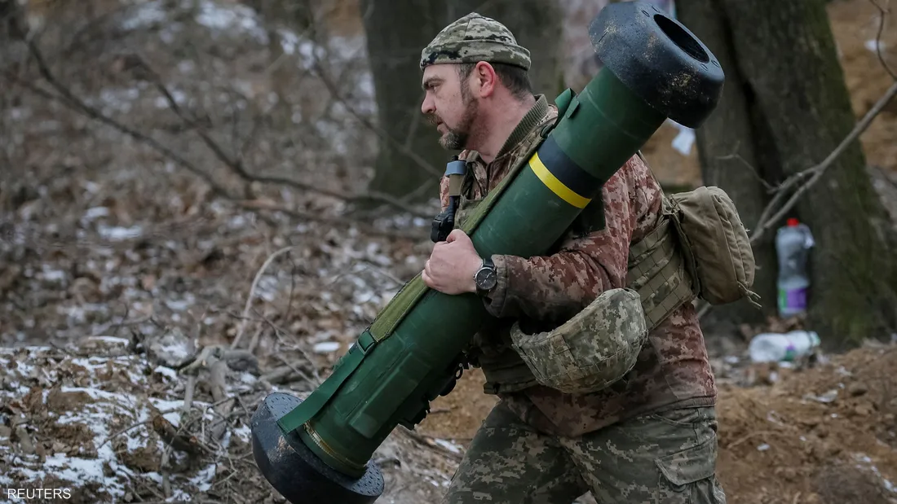
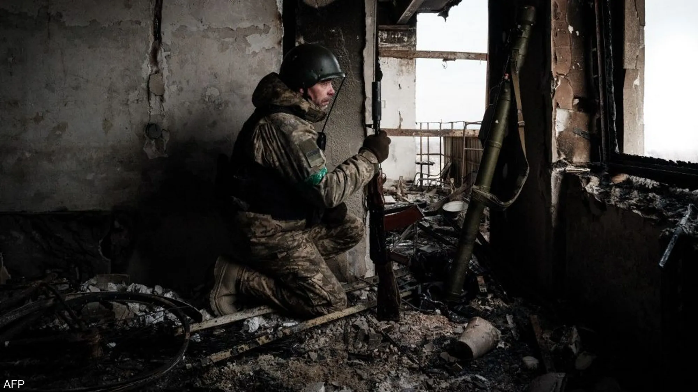
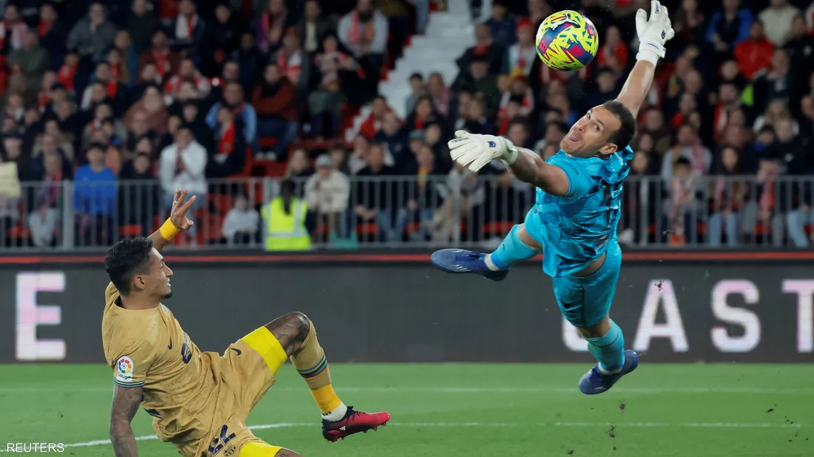

الصفحة الرئيسية
اهلا بكم في موقع عاجل وجديد ستجدون اخر الاخبار المهمة
اهلا بكم في موقع عاجل وجديد ستجدون اخر الاخبار المهمة
تحدث مدير وكالة الاستخبارات المركزية الأميركية، وليام بيرنز، عن الحرب الدائرة في أوكرانيا، إثر دخول عامها الثاني، يوم الرابع والعشرين من فبراير الجاري، مشيرا إلى ما اعتبرها "ثغرة روسية" بسبب طريقة اتخاذ القرار في الكرملين، بحسب قوله. وقال بيرنز الذي سبق له أن شغل منصب السفير الأميركي في موسكو، أن أكبر ثغرة روسية في نظره، هي أن العدد المحدود من المسؤولين الذين كانوا حول الرئيس، فلاديمير بوتين، كانوا يقولوا له ما يريدون سماعه، وليس ما هو قائم على الأرض بالفعل. وأضاف في مقابلة صحفية مع البرنامج الشهير "فيس ذا نيشن"، أنه تابع عن كثب منذ سنوات، لا سيما خلال السنوات الأخيرة، كيف ضاقت دائرة المستشارين من حول بوتين، فصارت تضم عددا محدودا ممن يقدمون المشورة. -ADVERTISEMENT- Ads by وتابع أن المسؤولين المحيطين ببوتين فضلوا تقديم الولاء على الكفاءة، قائلا إنهم أدركوا مع مرور الوقت أنه ليس في صالح مسارهم المهني والسياسي أن يخضعوا مواقف بوتين للنقاش أو يجعلوها موضع مساءلة. واستطرد المسؤول الاستخباراتي الذي سبق له أن شغل عددا من المناصب الديبلوماسية الرفيعة "هذا الأمر في اعتقادي كان أكبر ثغرة". وأردف أنه قبل بدء العمليات العسكرية في أوكرانيا، كان هذا الأمر حاصلا، قائلا إن مسؤولي هذه الدائرة الضيقة حول بوتين كانوا يدعمون "الافتراضات الخاطئة" لبعضهم بعضا. وتطرق بيرنز أيضا إلى الرحلة التي قام بها إلى كييف قبل بدء الحرب، من أجل لقاء الرئيس، فولوديمير زيلينسكي، وإطلاعه على أحدث المعلومات الاستخباراتية التي كانت في جعبة واشنطن بشأن تحركات الروس. وذكر أنه أطلع الأوكرانيين على "ترتيب روسيا هجوما اعتقدت أنه سيكون مفاجئا من جهة بيلاروسيا لأجل السيطرة على كييف في غضون أيام". أخبار ذات صلة الروبل الروسي بعد عام على الحرب.. هل تواصل العملة الروسية صمودها؟ زيلينسكي زيلينسكي يفصح عن مشكلة صحية عانى منها عقب حرب أوكرانيا زلزال وليام بورنز سي آي إيه روسيا فلاديمير بوتين الأكثر قراءة جواز سفر أنور السادات خاص بيع جواز سفر السادات في صالة مزاد.. وأسرته تعلق الزلزال لم يحدث أي خسائر في الأرواح والممتلكات شرق أوسط مصر تسجل وقوع زلزال شمالي مدينة السويس مرتضى منصور رياضة ترحيل مرتضى منصور للسجن.. وحقيقة عزله من رئاسة الزمالك سكان من عثمانية التركية يخلون بيوتهم المتصدعة تمهيداً لهدمها عالم خبير الزلازل الهولندي يكشف خريطة "الرعب الحمراء" خاص "فاغنر" تقطع الإمداد وأوكرانيا تفجر السدود.. هل تسقط باخموت؟ l قبل 2 ساعة خاص - سكاي نيوز عربية جندي أوكراني في قلب مواجهات باخموت جندي أوكراني في قلب مواجهات باخموت تصاعد القتال على طول خط المواجهة في الجبهة الشرقية، وبالتحديد باخموت شرق أوكرانيا، حيث تخوض القوات الأوكرانية معارك ضارية لمنع قوات "فاغنر" الروسية تطويق تلك الجبهة، والتقدم نحو إقليم دونباس. في حديثين منفصلين لموقع "سكاي نيوز عربية"، يسرد مسؤول عسكري أوكراني وسائل جيش بلاده لصد التقدم الروسي، في حين يقدم باحث في الشؤون الروسية ما يراها مؤشرات اقتراب حسم معركة باخموت لصالح موسكو. تبذل "فاغنر" الروسية جهودًا متواصلة لقطع كل خطوط الإمداد بالأسلحة والذخائر عن القوات الأوكرانية بمحيط محور باخموت، لا سيما بعدما أعلنت سقوط قرية بيرخوفكا التي باتت تحت السيطرة الكاملة؛ وهو ما يفتح الطريق أمام إخضاع "المقاومة" في دونباس. ميدانيا، يؤكد سفياتوسلاف بودولاك، مسؤول عسكري أوكراني في جبهة دونباس، أن القتال في تلك الجبهة هو الأعنف منذ بداية الحرب، نظرًا لتضاريس المنطقة والطقس، ورغم ذلك ما تزال القوات صامدة لمنع المخطط الروسي الخاص بتطويق المدينة وسقوط محور دونباس بالكامل. إحكام الكماشة الروسية قال يفغيني بريغوجين، قائد مجموعة "فاغنر"، في بيان نشره جهازه الإعلامي، إن "قرية بيرخيفكا تحت سيطرتنا بالكامل"؛ ويعني تأكيد السيطرة على بيرخيفكا أن القوات الروسية بدأت تحكم الكماشة على باخموت من جهة الشمال. نشر بريغوجين صورة لمقاتلين من "فاغنر" عند مدخل البلدة الاستراتيجية في الضاحية الشمالية لباخموت؛ وسبق أن أعلنت "فاغنر" سيطرتها على بلدات وأحياء في محيط وداخل باخموت، وذلك بعد أشهر من المعارك. هنا يوضح سفياتوسلاف بودولاك، لموقع "سكاي نيوز عربية"، أن ما يجري على الأرض: • قطع شبه كامل للإمدادات على 4 محاور في دونباس. • تطويق مداخل باخموت وليمان وإفديفكا وشختار. • تراجع القوات الأوكرانية لأطراف باخموت حيث يفصل بين الجانبين كيلومترين فقط. • استخدام القوات الأوكرانية المدفعية والقصف المتواصل لفك الحصار ودفع "فاغنر" للتراجع. ولصد تقدم "فاغنر"، فجَّر الأوكرانيون بالفعل سدّ أرتيوموفسك، وكذلك لمنعها من استخدامه في نقل المعدات الثقيلة لقلب باخموت، حسب بودولاك. حسم باخموت باتت القوات الروسية مدعومة بوحدات "فاغنر" على مقربة من إنهاء حرب استمرت لأسابيع في محور باخموت، يعزز ذلك إخضاع كامل أنحاء بيرخوفكا، والسيطرة شبه الكاملة على المدخل الشمالي ممثلا في بلدة باراسكوفيفكا (جنوب غرب باراسكوفيفكا شمالي دونيتسك)، الأسبوع الماضي. أحرزت القوات الروسية تقدما ملحوظا الأسابيع الأخيرة، لا سيما شمالًا، بحيث سيطرت على مدينة سوليدار الشهر الماضي، وتستمر في التقدم نحو تطويق تام لشمالي باخموت، بينما أكد تقرير عسكري أوكراني أن القرى القريبة من باخموت لا تزال تحت سيطرة كييف. يرى الباحث في الشؤون الروسية الأوروبية، الدكتور باسل الحاج جاسم، نقاطا تبرهن على اقتراب حسم روسيا لمعركة باخموت، ودور قوة "فاغنر" فيها: • استطاعت "فاغنر" قطع طرقات مهمة لتموين القوات الأوكرانية بمحيط باخموت. • زيارة رئيس مجموعة "فاغنر" الضواحي الشرقية لباخموت. • اعتمدت القوات الروسية تكتيكات متطورة أثبتت نجاحها في مقابل الدفاعات الأوكرانية.  في بداية الأسبوع، أكدت الدفاع الروسية السيطرة على قرية باراسكوفيفكا المجاورة أيضا، وبالسيطرة على هذه المناطق فمن الممكن الاقتراب من قطع الطريق المؤدي إلى مدينة تشاسوف يار، وهو الطريق الوحيد الذي يمكن عبره نقل الإمدادات للقوات الأوكرانية في باخموت حاليا، وهو ما تسعى "فاغنر" لتحقيقه. في وقت سابق اليوم، أعلن الجيش الأوكراني، أن روسيا شنت هجمات فاشلة قرب قرية ياهيدني خلال اليوم المنتهي، وذلك بعدما قالت "فاغنر" إنها استولت على القرية الواقعة في شرق أوكرانيا قرب منطقة يحتدم فيها القتال. أخبار ذات صلة الروبل الروسي بعد عام على الحرب.. هل تواصل العملة الروسية صمودها؟ الطائرة التركية المسيرة بيرقدار 3 أسلحة غيرت مسار "الحرب الضارية" في أوكرانيا الجيش الأوكراني روسيا باخموت فاغنر اخترنا لكم أدنوك اقتصاد اكتتاب "أدنوك للغاز".. الأكبر عالميا منذ بداية 2023 جسم حديدي كروي مجهول يثير الذعر في اليابان منوعات فيديو.. جسم حديدي كروي مجهول يثير الذعر في اليابان في معرض الدفاع الدولي "آيدكس 2023" بدورته السادسة عشرة شرق أوسط بينها "الجنية" الإماراتية.. صور لأحدث الأسلحة بمعرض "آيدكس" هل ساعات النوم الفائتة يمكن تعويضها؟ تقارير مصورة تعوض في عطلة الأسبوع.. دراسة تنفي معتقد شائع عن ساعات النوم 3 أسلحة غيرت مسار "الحرب الضارية" في أوكرانيا l قبل 7 ساعات ترجمات - أبوظبي الطائرة التركية المسيرة بيرقدار الطائرة التركية المسيرة بيرقدار دخلت الحرب الدائرة في أوكرانيا، عامها الثاني، مؤخرا، وسط وضع ميداني أقرب إلى الجمود، فيما تقول دول غربية إن مساعداتها العسكرية السخية لكييف، أتاحت التصدي للجيش الروسي الذي يحاول بشكل دؤوب أن يحرز تقدما على الأرض. ويقول خبراء عسكريون إنه ما كان بوسع أوكرانيا أن "تصمد" أمام العمليات العسكرية الروسية لولا الدعم العسكري الذي انهمر عليها من دول غربية حليفة، على رأسها الولايات المتحدة. وأطلقت روسيا علمياتها العسكرية في 24 فبراير 2022، على نطاق واسع في أوكرانيا، فحاولت إسقاط كييف، في بداية الأمر، لكنها تراجعت إلى نطاق "أضيق"، في وقت لاحق، فركزت الجهود القتالية على شرق وجنوب أوكرانيا. وجرى النظر إلى تعديل "خطة الحرب الروسية" بمثابة إدراك لصعوبة السيطرة على كامل أوكرانيا، أو إسقاط القيادة السياسية في البلاد. وبحسب شبكة "سي إن إن"، فإن ثلاثة أسلحة كان لها دورٌ حاسم للغاية في تمكين أوكرانيا من قلب مسار الحرب مع روسيا، حتى الآن على الأقل. واشنطن تعتبر صواريخ جافلين حيوية في الحرب الحالية واشنطن تعتبر صواريخ جافلين حيوية في الحرب الحالية صواريخ جافلين يجري إطلاق صاروخ "جافلين" عن طريق منصة أو الكتف، ويبلغ وزنه نحو 7 كيلوغرامات، ويصل مداه إلى نحو 2500 متر. ويتميز عن غيره بأنه يسقط على الهدف من الأعلى وليس من الجانب، على غرار بقية الصواريخ المضادة، مما يعطيه ميزة تجاوز العوائق والقدرة على ضرب الدبابات في أضعف مناطقها. وتم تسميته بـ"الرمح" لأن طريقة إطلاقه تشبه رمي الرمح الذي يسقط على الأرض بزاوية شديدة الانحدار، كما يتميز بقوة تدميرية عالية فهو قادر على اختراق أي دبابة، وفقا لتقارير عسكرية. فضلا عن ذلك، يستعين بنظام توجيه علوي، حيث يتقوس لدى بلوغه الهدف ويستهدف النقطة الأضعف من الهدف من الأعلى. ولإطلاق جافلين يتوجب على مطلِقه تحديد الهدف من خلال المؤشر، ليرسل إشارة للنظام الكلي بالهدف المراد قبل إطلاقه، كما يتيح تصميم الإطلاق إلى استخدام جافلين بأمان من داخل المباني أو المخابئ. المساعدات تشمل 18 راجمة صواريخ من طراز "هيمارس" المساعدات تشمل 18 راجمة صواريخ من طراز "هيمارس" صواريخ "هيمارس" تتميز "هيمارس" بتفوقها على قذائف مدافع "هاوتزر" الأميركية التي أرسلتها واشنطن من قبل لأوكرانيا، حيث تحتوي الواحدة من "هيمارس" على 6 صواريخ يصل مدى الواحدة منها إلى 70 كيلومترا، ما يوفر للجيش الأوكراني الدقة في الاستهداف عن بعد وإمكانية تدمير مستودعات الذخيرة والإمدادات الروسية. وتتكون منظومة صواريخ "هيمارس" من نسختين M142 وM270 معروفتين بسرعة نشر الصواريخ. وتعد راجمات الصواريخ "M270" هي الأحدث، وتم تطويرها في سبعينيات القرن الماضي لتصبح أخف وزنا ومميزة بنظام إطلاق مركب على مركبة "برادلي" القتالية للمشاة، مما يعدد استخدامها في إطلاق صواريخ مدفعية من عيار 27 ميلليمتر وصواريخ باليستية قصيرة المدى، أما راجمات "M142" تركب على هيكل شاحنة من المركبات التكتيكية المتوسط بنظام إطلاق صغير. الطائرة التركية المسيرة بيرقدار الطائرة التركية المسيرة بيرقدار مسيرات بيرقدار أصبحت من بين الطائرات المسيرة الأكثر شهرة في العالم، بعد استخدامها بشكل واسع في حرب أوكرانيا. وتمتاز هذه المسيرة بكونها غير باهظة السعر، كما يجري تصنيعها بأجزاء غير معقدة، فيما تستطيع توثيق عملياتها القتالية بالفيديو. وانتشرت مقاطع فيديو توثق هجمات من هذه المسيرة على عربات مدرعة روسية ومدفعية وخطوط إمداد. وشنت المسيرات التركية تلك الهجمات من خلال ما تحمل من صواريخ، إلى جانب قنابل ذكية وصواريخ موجهة بالليزر. ويقول الباحث في معهد بحوث السياسة الخارجية، آيرون ستين، إن مسيرات بيرقدار لم تكن سلاحا سحريا، لكنها كانت جيدة بما يكفي. وأوضح في مقال منشور على موقع "أتلانتيك كاونسل"، أن بيرقدار تحتاج إلى المزيد من السرعة، كما أن نقطة ضعفها تكمن في كونها أكثر عرضة للدفاعات الأرضية. أخبار ذات صلة 9 صور تلخص أحداث عام على حرب أوكرانيا تقدم روسي "مهم" في دونيتسك.. وأوكرانيا تكبدت خسائر روسيا تتهم الغرب بـ"زعزعة" استقرار مجموعة العشرين روسيا تتهم الغرب بـ"زعزعة" استقرار مجموعة العشرين حرب أوكرانيا روسيا أسلحة طائرات الأكثر مشاهدة أزمة أوكرانيا.. مساعدات أميركية جديدة عالم أزمة أوكرانيا.. مساعدات أميركية جديدة كوريا الشمالية تعلن إطلاق 4 صواريخ كروز استراتيجية عالم كوريا الشمالية تعلن إطلاق 4 صواريخ كروز باتجاه البحر ارتفاع ضغط الدم يدق ناقوس الخطر عند الأطفال علوم ارتفاع ضغط الدم يدق ناقوس الخطر عند الأطفال الناتو: انتصار روسيا في الحرب أكبر خطر على أمننا عالم الناتو: انتصار روسيا في الحرب أكبر خطر على أمننا بريطانيون يواجهون الرفوف الفارغة.. لماذا اختفت الطماطم؟ l قبل 8 ساعات ترجمات - أبوظبي متاجر بريطانيا فرضت قيودا على بيع بعض الخضار متاجر بريطانيا فرضت قيودا على بيع بعض الخضار يعاني البريطانيون نقصا شديدا في بعض الخضار هذه الأيام، فلا يجدون مكونات كثيرة ألفوا أن يشتروها لأجل تحضير سلطات معروفة، وسط جدل في البلاد حول الطرق الممكنة لمعالجة الأزمة التي يبدو أنها سائرة نحو التفاقم مستقبلا. وبحسب صحيفة "واشنطن بوست"، فإن نقص الخضار لا يقتصر على الخس، بل يمتد أيضا إلى ثمار أخرى يجري تناولها بكثرة مثل الطماطم (البندورة). وتأثرت واردات بريطانيا من خضار كثيرة، بسبب تراجع المحاصيل في جنوب أوروبا ودول شمال إفريقيا، خلال الفترة الأخيرة بسبب ظروف الطقس. وأمام هذا النقص، بادرت متاجر في بريطانيا إلى الإلزام بـ"حصة محددة" لكل زبون، مثل عدم تجاوز عدد معين من حبات البندورة. وقامت متاجر مثل "موريسونز" و"تيسكو" بتقييد بيع خضار وثمار مثل الطماطم والخس والخيار. وتداول مستخدمون لمنصات التواصل في بريطانيا، صورا لرفوف الفواكه والخضار وقد باتت فارغة، في مؤشر واضح على نقص التموين. ونقلت صحيفة "مترو" عن امرأة بريطانية متذمرة أنها لم تستطع الحصول على 100 قطعة من الخيار، في حين تحتاج إلى الثمرة بشدة من أجل استخدامها في إعداد مشروب صحي تقوم ببيعه. في غضون ذلك، نشر بريطانيون يعيشون في دول أوروبية، صورا لرفوف المتاجر وهي ممتلئة عن آخرها بالخضار والفواكه. وألقى بعض مستخدمي المنصات، باللوم على قرار الخروج من الاتحاد الأوروبي، لأنه أربك التجارة مع باقي الدول المجاورة، فيما أدى لنقص في العمال. من جانبه، عزا وزير الزراعة البريطاني، مارك سبينسر، هذا النقص إلى موجة الصقيع التي ضربت كلا من المغرب وإسبانيا في شهري نوفمبر وديسمبر، فأثرت على ثمار مستخدمة بشكل كبير في السلطة، في حين كان البلدان مصدرا مهما للاستيراد في هذه الفترة من السنة. في غضون ذلك، انتقد الاتحاد الوطني للمزارعين في بريطانيا، ما اعتبره الاعتماد الكبير على الخارج في استيراد المنتجات الزراعية خلال
ض الرئيس الفرنسي، إيمانويل ماكرون لهجوم نشطاء في مجال البيئة خلال زيارته لمعرض الزراعة الدولي في باريس. وهاجم النشطاء ماكرون مع توجيه اتهام له بالتقصير في ملف المناخ، مما استدعى طاقم الأمن للرئيس الفرنسي للتدخل بسرعة وإبعادهم. وعقب تداول عدة مقاطع فيديو على "تويتر" للحادثة، وصف المتابعون طريقة تعامل حراس الأمن مع منفذي الهجوم بـالـ"وحشية". أخبار ذات صلة السلطات أوقفت الشابين ويخضعان للتحقيق حاليا صفعة ماكرون.. مفاجأة بشأن مصير الفاعل وتعرض ماكرون سابقا، للصفع من قبل شخص خلال زيارة له لمنطقة جنوب شرق البلاد، واعتقلت الشرطة شخصين بعد الواقعة. وتناقلت وسائل إعلام فرنسية، حينها الخبر على نطاق واسع، وأفادت أن السلطات الفرنسية ألقت القبض على شخصين بعدما صفع رجل الرئيس ماكرون على وجهه خلال جولة مع حشد من الناس في منطقة دروم بجنوب شرقي فرنسا.
اخر واهم الاخبر الرياضية
استكمل مانشستر يونايتد مسيرته المميزة هذا الموسم، وحقق أول الألقاب في إنجلترا، بتحقيقه كأس الرابطة الأندية الإنجليزية المحترفة لكرة القدم ليلة الأحد. وانتصر مانشستر يونايتد في نهائي البطولة على نيوكاسل يونايتد، بنتيجة 2-0، وقدم مباراة ممتازة سيطر عليها منذ البداية. وسجل كاسيميرو الهدف الأول بضربة رأس في الدقيقة 33 وانتظر للتأكد من صحة الهدف بعد مراجعة حكم الفيديو المساعد.وبعد 6 دقائق، أضاف يونايتد الهدف الثاني بعد تسديدة من ماركوس راشفورد أبدلت اتجاهها في سفين بوتمان مدافع نيوكاسل ودخلت مرمى الحارس لوريس كاريوس الذي فشل في إبعادها بيده. وضغط نيوكاسل بكل قوة في الشوط الثاني وصنع عدة فرص لكن النتيجة لم تتغير حتى النهاية. وهذا أول لقب محلي لمانشستر يونايتد منذ الفوز بكأس الرابطة تحت قيادة المدرب جوزيه مورينيو في 2017.
أهدر برشلونة فرصة تعزيز صدارته لدوري الدرجة الأولى الإسباني لكرة القدم بعدما تلقى هزيمة مخيبة 1-صفر أمام مضيفه ألميريا بفضل هدف المهاجم البلال توري في الشوط الأول. أخبار ذات صلة ديربي مدريد أوفى بوعده ديربي الغضب.. أتلتيكو مدريد يعيق الريال ويقدم هدية لبرشلونة ويتصدر برشلونة الدوري وله 59 نقطة متقدما بسبع نقاط على ريال مدريد ثاني الترتيب والذي كان تعادل 1-1 مع ضيفه أتليتيكو مدريد السبت. ويأتي ألميريا في المركز 15 برصيد 25 نقطة بفارق نقطتين فوق منطقة الهبوط. Ads by ووضع ألميريا حدا لانتصار برشلونة في سبع مباريات متتالية في الدوري، وألحق بضيفه، الذي ودع الدوري الأوروبي الخميس الماضي، الخسارة الثانية على التوالي بعد 18 مباراة بدون هزيمة. وكان ألميريا الطرف الأفضل في الشوط الأول، وسجل هدفه الوحيد بعد 24 دقيقة عندما أرسل لويس سواريز تمريرة طويلة إلى توري الذي تحرك خلف دفاع برشلونة وانطلق نحو منطقة الجزاء وسدد كرة قوية اصطدمت بالعارضة إلى داخل المرمى. وهذا هو الهدف الثامن في شباك برشلونة في الدوري هذا الموسم ورغم ذلك فهو يملك أقوى خط دفاع في بطولات الدوري الخمس الكبرى في أوروبا. وكاد ألميريا أن يعزز تقدمه لكن الحارس مارك-أندريه تير شتيجن تصدى لتسديدة المهاجم ليو بابتيستاو. 
تعرف على اسعار الذهب خلال هذا الاسبوع
اسعار الذهب عيار 24 41.34 دينار $58.27 سعر الذهب عيار 22 37.89 دينار $53.41 اسعار الذهب عيار 21 36.17 دينار $50.99 اسعار الذهب عيار 18 31.00 دينار $43.70 سعر الذهب عيار 14 24.11 دينار $33.99 سعر الذهب عيار 12 20.67 دينار $29.14 اسعار أوقية الذهب 1,286 دينار $1,812 اسعار جنيه الذهب 289.36 دينار $407.90
اخر واهم اخبار الطقس
تحديث: 26 شباط 2023 الساعة: 10:00 صباحاً مرتفع جوي يسيطر على أجواء المنطقة خلال الأيام القادمة ويترافق مع أجواء مستقرة وارتفاع تدريجي على درجات الحرارة وأجواء ربيعية سابقة لأوانها الاحد .. ارتفاع واضح على درجات الحرارة .. طقس لطيف نهاراً وأقل برودة ليلاً مقارنة بالليالي السابقة الاثنين .. ارتفاع اضافي على درجات الحرارة وطقس دافئ نهاراً وأقل برودة من المعتاد ليلاً الثلاثاء .. ارتفاع آخر على درجات الحرارة .. طقس دافئ نهاراً.. وأقل برودة من المعتاد ليلاً الأربعاء .. يستمر الطقس دافئاً نهاراً.. وأقل برودة من المعتاد ليلاً الخميس .. توالي درجات الحرارة ارتفاعها .. طقس دافئ نهاراً يميل للحرارة في بعض المناطق ظهراً والله أعلم.
يطرأ ارتفاع آخر على درجات الحرارة، لتصبح أعلى من معدلاتها لمثل هذا الوقت من العام بحوالي 7-9 درجات مئوية. ويكون الطقس لطيف إلى دافئ ومستقر وغالباً مشمس بشكل عام. وتكون الرياح جنوبية شرقية خفيفة إلى معتدلة السرعة تتحول إلى شمالية غربية معتدلة السرعة. في خليج العقبة: - الرياح: شمالية معتدلة الى نشطة السرعة. - حالة البحر وارتفاع الأمواج: منخفض ارتفاع الموج (20-40 سم). - درجة حرارة سطح مياه البحر: 21 درجة مئوية. ليلاً ترتفع درجات الحرارة الصغرة مُجدداً لتكون الأجواء أقل برودة من الليالي السابقة حيث تسود أجواء باردة نسبياً بوجه عام.